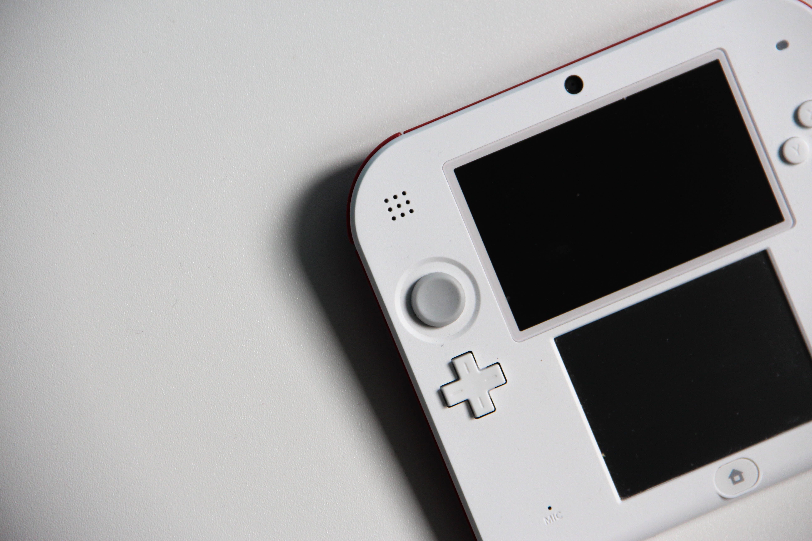
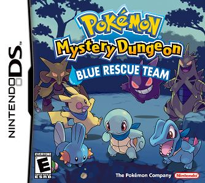
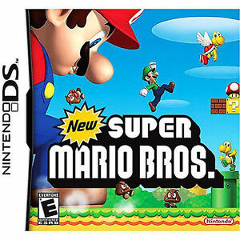
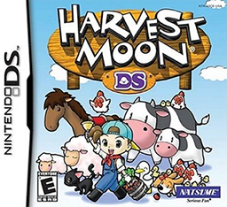
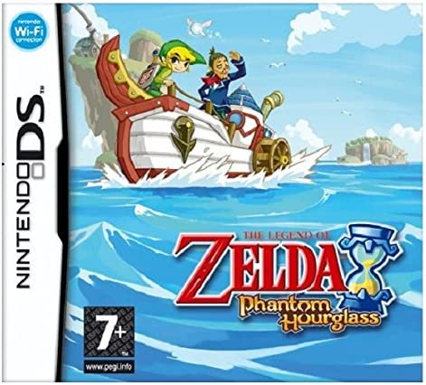
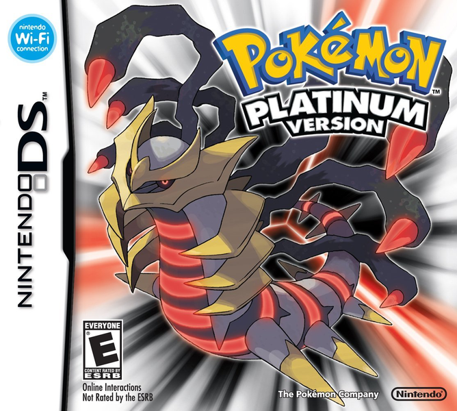

DS
Console
|
The DS was a dual screen portable console with touch screen technology, there
were a few in this series, the first was released 2004, the lite was released
2006, which as the name suggests, was a lighter version of the bulky DS.
The DSi followed in 2008 featuring a camera, and an XL version for those who
preferred a larger screen.
Finally the 3DS was released in 2011, with an XL version in 2015.
|
 |
My Top Rated
|  |
Pokemon Mystery DungeonThis was my absolute favourite game for the DS series, it was such a different experience to the Pokemon games I already knew and loved, it did not lack a challenge either, bringing hours and hours of fun! |
Official Top Rated
|  |
New Super Mario Bros
This was a revamp of the original Super Mario Brothers
game, with updated graphics and bringing users that feeling
of nostalgia. It became so popular that it sold over 30 million
copies worldwide.
|
Game Reviews
Animal Crossing:
Wild World

This is a relaxing game where you play as a
character living in a town with animal characters
for neighbours, the Animal Crossing games are synced
to the systems clock, so what day and time you play
really changes the experience.
My love for animal crossing started with the
original GameCube version, but a portable console
with wireless capabilities really made this game
more enjoyable, the touch screen was super fun,
making selection more accurate, and sorting storage
that little bit easier than a regular game.
Harvest Moon:
DS

Harvest Moon is considered to be another relaxing
game, it is from the Story of Seasons series before
they rebranded and another company held the 'Harvest
Moon' name and made similar games.
it is a farm simlation & role playing game, you
can farm crops and raise livestock, you can upgrade
your home and build friendships.
I really enjoyed this game in particular from this
series, as you could have your horse hold your crops
before you store or ship them to sell, which made
harvesting a lot less tedious, running back and forth
to empty your characters backpack storage.
The Legend of Zelda: Phantom Hourglass

This is a super enjoyable game from The Legend
of Zelda series, where you can explore islands
by sailing between them, and explore the dungeons
on foot. On the top screen of the console you can
view a map, you can also make notes on the map
by bringing it down to the bottom screen and
drawing on it.
This game featured a large dungeon in which
Link needs to obtain sea charts to allow him
to sail other parts of the ocean, these dungeons
have phantoms, an enemy in which you use stealth
to get past, rather than engage in combat.
Pokemon:
Platinum

A great game from the Pokemon series. This game
is located in the 'Sinnoh' region, the same as
Diamond & Pearl, but the wireless features had
been enhanced.
Every Gen IV Pokemon (apart from legendaries)
were included in Platinum, meaning there were
no version exclusives, so you could enjoy all
of the new mons. I was a little underwhelmed
with the fire type starter Pokemon 'Chimchar'
and opted in for Piplup, Empoleon makes for a
very well designed Pokemon! I think I enjoyed
the Pokemon Super Contests more than anything
in this generation.